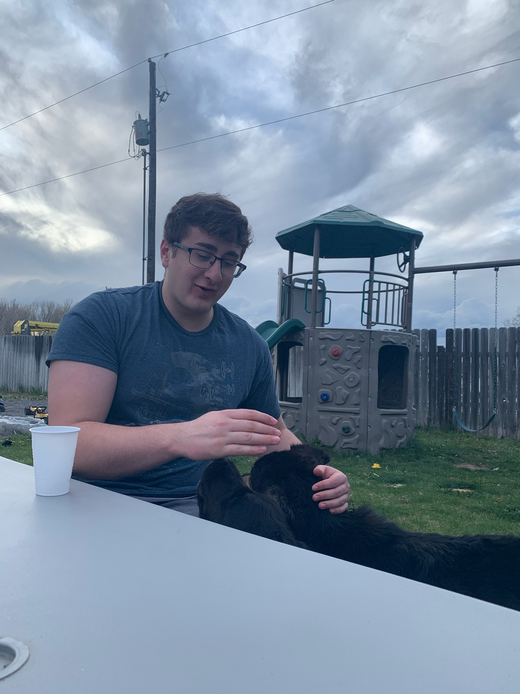

Jacob Atanasio
I am a computer science major. I am from San Antonio Texas, and I love the outdoors.
I love camping and hiking, and pretty much all sports.
My favorite sports are football and volleyball.
I also enjoy watching movies and playing video games.